About the project
GolfPac Travel lets golfers book complete multi-day trips (golf rounds, lodging and rental cars) across US destinations in one place. Its early-2000s look no longer matched the scope of what it offered, and stakeholders had seen conversion rates falling.
I owned the redesign end to end: research, wireframes, visual design and the AngularJS implementation itself.
- Years in business
- 35+
- Golfers served
- 500K+
- Destinations
- 200+
And 3 separate planning paths, the number my redesign set out to simplify.
Some visuals here are wireframes and illustrative representations rather than final production screens.
The challenge
Golfers were asked to commit to a multi-day, multi-part trip on a site that looked untouched for a decade.
Next to modern travel sites, the experience felt dated and untrustworthy for a significant, considered purchase.
| Business problem | User problem |
|---|---|
| Falling conversions | Too many competing calls to action |
| Outdated visual design | Didn’t trust the website |
| Booking spread across three disconnected paths | Didn’t know where to start |
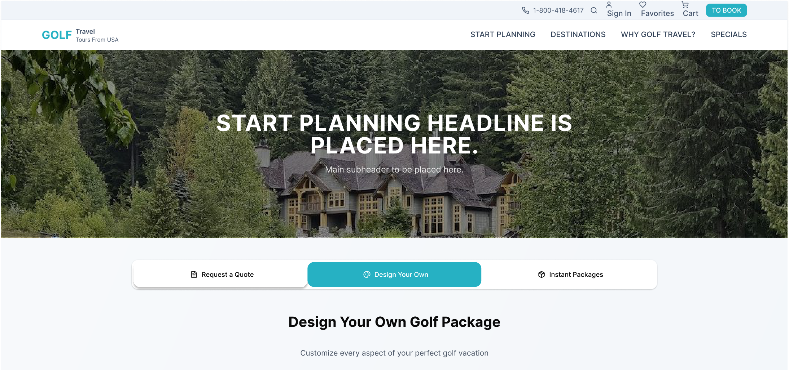
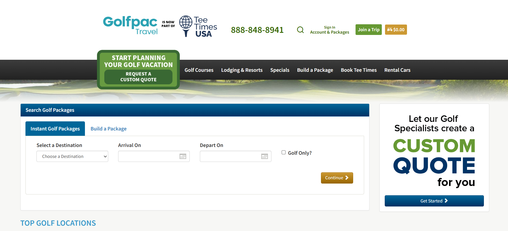
Pinpointing the issues
- Competing entry points. Request a Quote, Design Your Own and Instant Packages had no shared structure, so users didn’t know which to use.
- Trust deficit. The outdated design undermined confidence in an expensive purchase.
- Scope mismatch. It read like a basic tee-time booker, not a trip builder covering golf, lodging and cars together.
Michael R.52, frequent golf traveler · decisive, value-conscious, time-pressed, loyal
“I want to book my trip in one sitting. If I have to guess which button starts the process, I’ve already lost trust in the company handling my vacation.”
- Goals: compare destinations quickly, see a transparent all-in price before committing, and book a whole multi-day trip without calling anyone.
- Pain points: three different “start planning” buttons with no explanation, and a dated design that undermines trust for a costly purchase.
- Needs: one obvious way to start, pricing shown upfront rather than behind a quote request, and a site that feels current.
- With technology: comfortable booking travel online, prefers self-service but expects a phone fallback, and has little patience for multi-step forms with unclear progress.
An illustrative persona, built from stakeholder input rather than formal user interviews.
The journey
The end-to-end flow the redesign was built around:
- Discover
- Choose destination
- Build package
- Review
- Pay
- Confirmation
Before
- Too many competing entry points
- No guidance on where to start
- Low trust from an outdated design
After
- One unambiguous path
- A progressive, four-step checkout
- Trust indicators at every stage
Goals
The aim was a flow that felt familiar and linear, matching how people already book complex, multi-part trips (Airbnb being the clearest reference), rather than asking them to compare whole inventories across destinations at once.
- One clear entry point instead of three competing paths.
- A modern visual system that earns trust for a high-cost purchase.
- A structure that scales across golf, lodging and car rental together.
- Wireframes first, to validate flow logic before visual design.
Research & discovery
- Stakeholder workshops
- Wireframes
- Heuristic review
- Prototype
- Implementation
My understanding came from structured stakeholder workshops with the GolfPac team through the design phase (Aug 2024 to Jan 2025). As an external contributor without access to end users or analytics, this was the most reliable signal available: which planning path confused people most, which business rules constrained the redesign, and where internal teams disagreed, which itself pointed to where the experience was genuinely ambiguous.
To be upfront: I didn’t run direct user interviews or formal usability studies on this project. The workshops gave strong signal on constraints and internal perception, not end-user validation, which is why pushing for analytics access is first on my list of improvements.
Competitor reference points
| Airbnb & Booking.com | GolfPac before |
|---|---|
| Progressive, single-listing booking | Three separate, competing calls to action |
| Large, real photography | Text-heavy, minimal imagery |
| One destination at a time | Multi-destination comparison |
The redesign adopted these proven travel-booking patterns instead of inventing a new interaction model.
Usability heuristics
Without formal test rounds, I checked decisions against established heuristics:
- Visibility of system status: the four-step checkout (Traveler → Review → Payment → Confirm) keeps users oriented.
- Recognition over recall: Design Your Own shows real course and lodging photos instead of a plain list.
- Consistency and standards: the linear, single-destination pattern of mainstream travel sites, nothing new to learn.
- Error prevention: a linear flow structurally prevents the confusion of comparing incompatible multi-destination inventories.
These heuristics informed decisions; they didn’t validate them against real behaviour.
Design process
Information architecture
- Homepage
- Destination
- Packages
- Traveler details
- Payment
- Confirmation
The principles: reduce decisions, increase trust, match mental models, keep booking linear and surface pricing early.
Wireframes first
I mapped the whole experience in black-and-white wireframes before any visual design: entry and account screens, the three planning paths, supporting content (Destinations, Specials, Why Golf Travel, Saved Trips) and checkout.

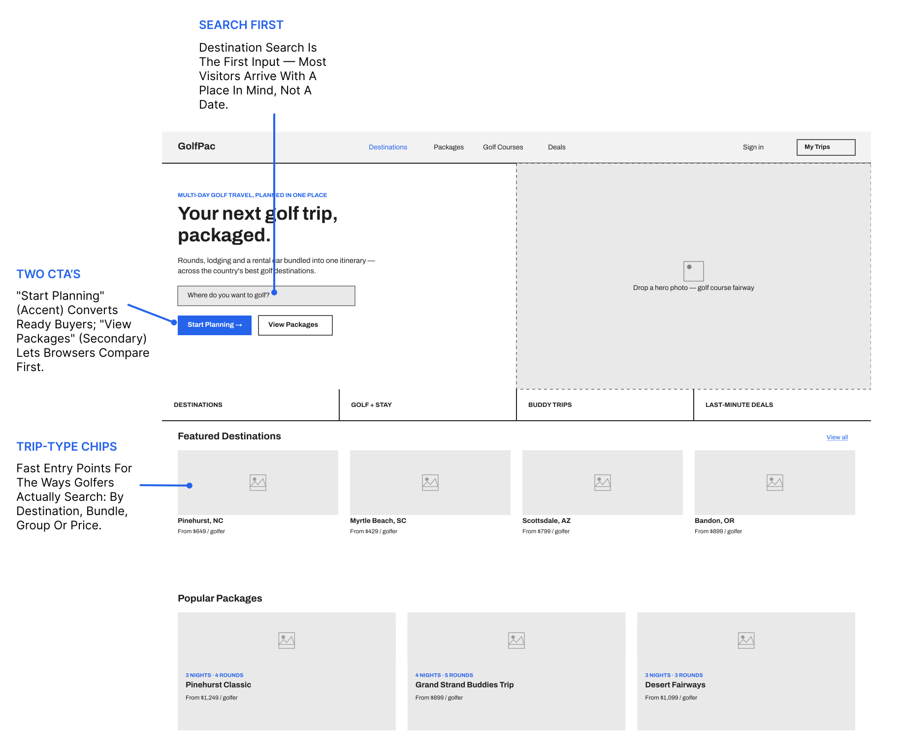
Decision matrix: destination selection
Stakeholders first wanted multi-select checkboxes on Destinations, to search several locations at once. Rather than push back with opinion alone, I built concrete scenarios comparing it with a linear, single-destination flow.
| Option | Pros | Cons |
|---|---|---|
| Multi-select | More flexible for comparison shoppers | Compounds the existing decision paralysis |
| Single destination ✓ | Simple, matches how people already book trips like this | Less flexible for cross-destination comparison |
The team agreed to keep destination selection linear.
Key features
- Findability: one entry point, with segmented tabs for Request a Quote, Design Your Own and Instant Packages.
- Linear destination selection: one destination at a time, as people book complex trips elsewhere.
- Progressive checkout: four steps (Traveler → Review → Payment → Confirm) instead of one dense form.
- A trust-building visual system: real photography, a modern cyan accent and reassurance copy right where checkout hesitation happens.

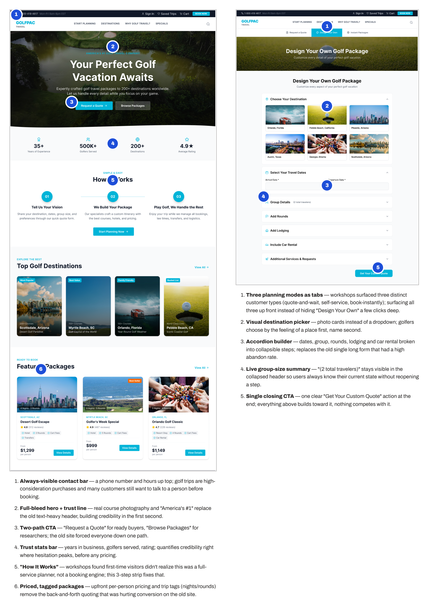
Final designs
With the structure settled, I moved to full visual design: GolfPac’s identity of a cyan accent, clean white surfaces and real course and destination photography, across the complete experience.


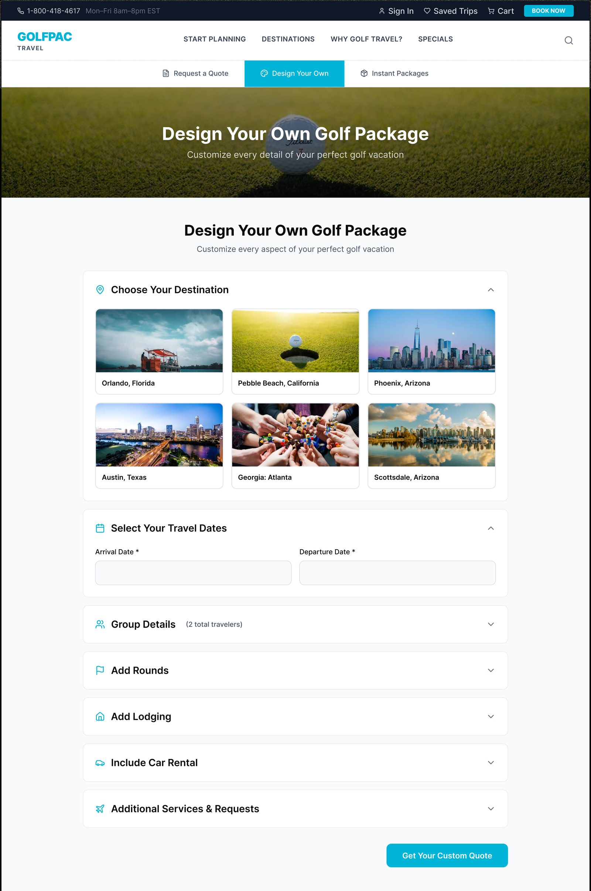

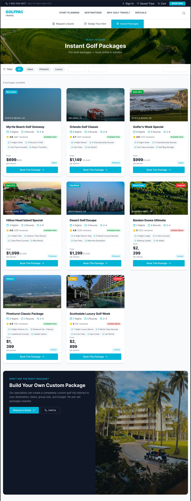

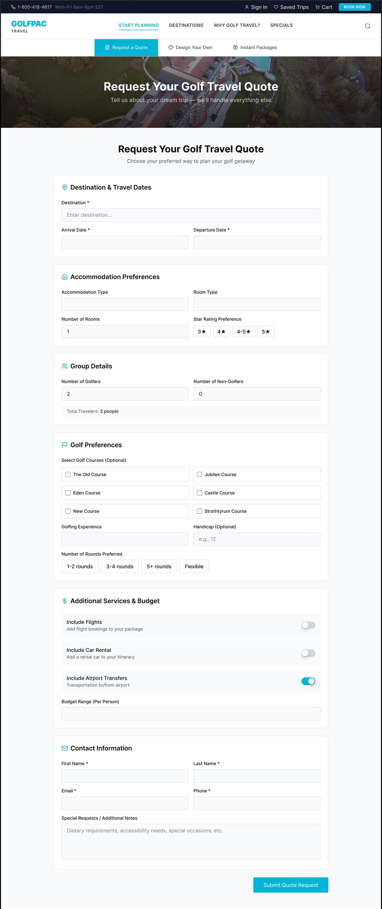

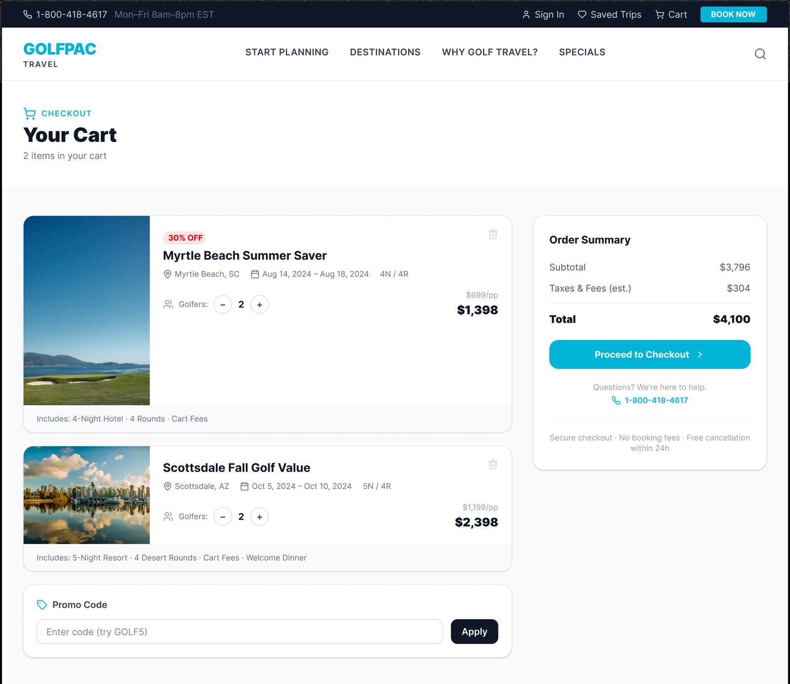

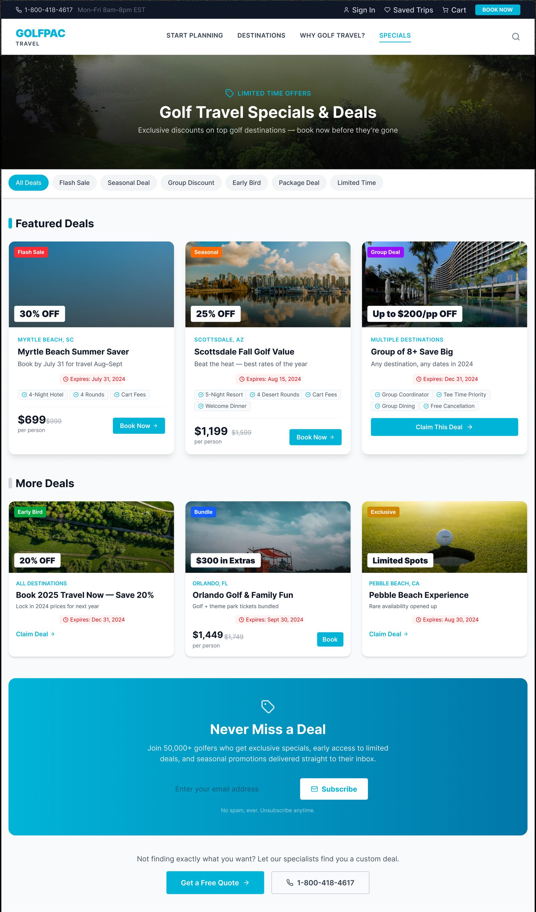

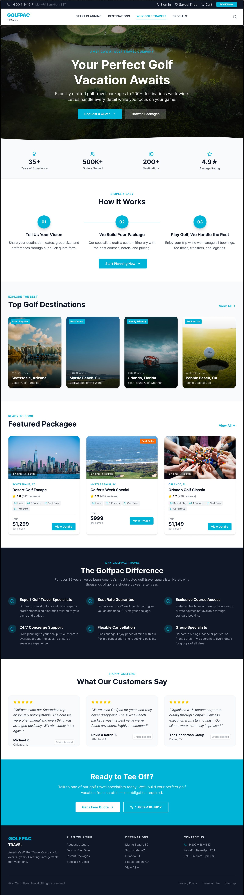

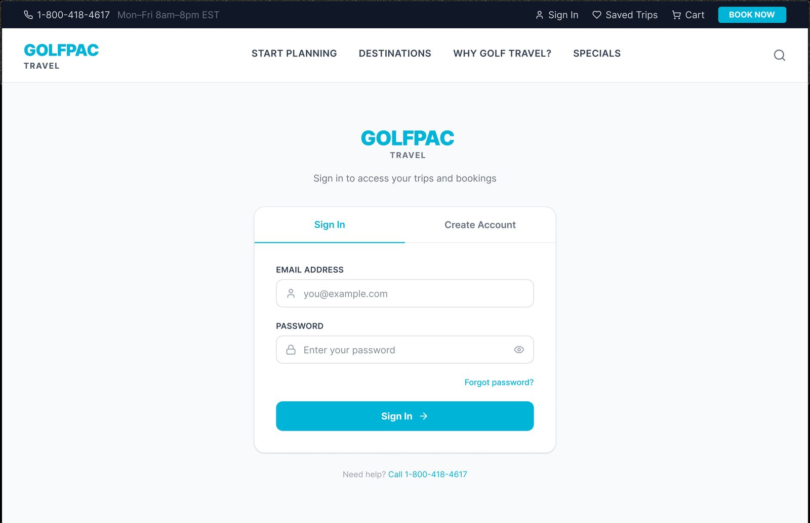

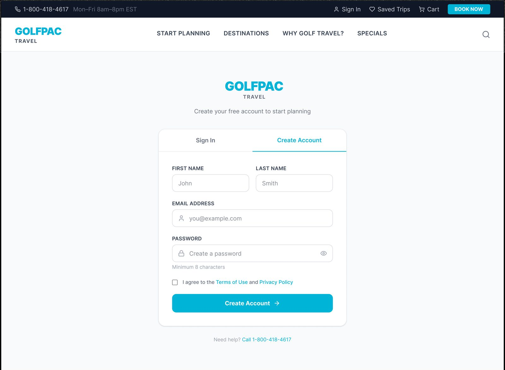
- Home: one clear call to action over real course photography, a trust bar (35+ years, 500K+ golfers, 200+ destinations, 4.9★) and a three-step How It Works.
- Destinations: cards with status, rating, reviews and starting price. “Don’t see your dream destination?” routes to a custom quote instead of a dead end.
- Design your own: real photos instead of dropdowns, with collapsible sections (group, rounds, lodging, car rental, extras) so users focus on one decision at a time.
- Instant packages: Value, Premium and Luxury chips for self-segmenting, strikethrough pricing for clear savings, and the same build-your-own fallback.
- Request a quote: the most form-heavy path and the clearest progressive disclosure, with each topic in its own card.
- Cart: items and summary side by side, adjustable golfer counts, transparent recalculation, and reassurance copy right above the button.
- Specials: expiry dates and discount badges without countdown pressure, filters by deal type, and a newsletter capture for visitors not ready to book.
- Why golf travel: a trust-building page for shoppers not yet ready to pick a destination.
- Sign in and create account: one tabbed component with no page load between them, password rules stated upfront and a simple inline consent checkbox.
- Saved trips: a light wishlist with saved dates, a direct Book Now and a phone fallback.
Designing and building it myself
- Figma component
- Angular component
- Reusable module
- Production
There was no translation gap on this project: I designed it and built it in AngularJS, which changed how the work happened.
- Implementation cost was always in view. Exploring the Destinations layout, I already knew what restructuring the controllers would take, so “ideal vs. buildable” was settled in one pass, not negotiated later.
- The component system was both design system and codebase. Cards, filter chips and step trackers were built once, as a visual standard and a real Angular component.
- No handoff queue. I could validate a decision by building it with real content, then adjust immediately.
- It went deeper than the surface. I restructured existing AngularJS controllers as part of the front-end modernization, improving maintainability too.
The honest trade-off: working solo meant no second engineer checking my technical decisions, as a real design-engineering pairing would. The tight design-build loop was still a genuine advantage.
What I took away
Shipped: a modernized UI, simplified booking, less ambiguity, a completed AngularJS implementation and positive stakeholder validation.
What worked
- Constraints sharpen decisions. Advocating for a linear flow meant building real scenarios, not asserting an opinion.
- Design and build together, not in sequence. Technical feasibility shaped decisions from day one.
- Simple beats powerful. More options doesn’t make an easier decision.
What I’d improve
- Push harder for direct end-user interviews instead of relying only on stakeholder workshops.
- Get analytics access earlier, to validate decisions against real behaviour, not just heuristics.
What I’d measure
- Completion rate
- Quote requests
- Time to checkout
- Drop-off per step